在华与华价值观中，做企业，就要做到不可撼动。不可撼动不在于规模的大小，即使只有 1 个亿，但哪怕是出现惊涛骇浪，也卷不走我这 1 个亿。做企业，不要做到 1000 亿，但一根稻草就能压垮了。这就像王阳明说的“哪怕只有四两，但是是百分百纯金。”你不要搞到八千斤、一万斤，但都是破铜烂铁。因此华与华为企业制定战略，想要达到的就是帮助企业实现不可撼动。我们希望通过华与华方法，帮助企业要扎下两条根：企业战略要扎下解决社会问题、事业母体的根；品牌资产要扎下文化母体的根。四只猫咖啡就是这样的一个标杆案例，我们为四只猫洞察到“云南咖啡与消费者间信息不对称，导致没有定价权、咖农弃咖种菜”的社会问题，提出“让中国人民喝上货真价实的云南好咖啡”，为企业一举扎下事业母体的根，开凿流量的根本源泉；
用“云南咖啡好，认准四只猫”的品牌谚语和“四只戴着咖啡豆的云南瓦猫”的超级符号，为企业一举扎下“文化母体”的根，用云南文化重塑咖啡这一全球品类，激活五个市场，成为响应乡村振兴、助力区域经济、被国务院经济研究所点名邀请交流的中国电商标杆案例。
在带教企业入局抖音从 0 到 1 的过程中，华与华讲要用哲学级洞察，找到原理级解决方案。我们洞察到，进入抖音时代，不再是传统的品牌定位：一个品牌找到一个品类锁定一个定位这样的方法，而是一个超级符号统领多个品牌定位。因为抖音把所有消费者划分为八大标签人群，流量根据标签来分配，一个品牌账号必须针对一个标签人群进行定位，流量才能像滚雪球越滚越多。正如 1927 年宝洁开创“产品经理制”，解决了“由多人同时负责同类产品，造成前后工序脱节”的问题，成就了后来伟大的多品牌 P & G 宝洁集团。四只猫率先开创“账号经理制”，按照账号来重新设计组织架构，由一个经理带领一个团队负责一个账号，形成同一品牌、不同品牌定位的账号矩阵。将企业内部生态连通抖音生态，成为抖音生态共同体，效率得以几何倍数的提升——最终实现库存周转率达到惊人的 3 天一次， 7 个月时间拔地而起、从 0 全面成长为品类第一品牌；在双方共同奋斗下，实现合作一年前后单月营收增长 503 %，全年营收增长252 %。我们是如何做的？接下来将从以下方面为你解析：
1 、扎根文化母体与事业母体，为企业立命，为品牌定型，改完就赚钱！

2 、一个超级符号统领多个品牌定位，从 0 到 1 破局抖音， 7 个月成长为抖音咖啡品类第一！3 、“云南咖啡好，认准四只猫”一句话同时激活顾客市场、政策市场、人才市场、社会公民市场！
1文化母体与事业母体为企业立命，为品牌定型改完就赚钱！企业课题：身陷流量牢笼，流量费触底企业生命线2021 年 6 月，四只猫咖啡找到华与华合作时，还不叫“四只猫”，当时有三个品牌：肆只猫、 catfour coffee 、畅饮者，主营三合一速溶咖啡，以天猫、京东等传统电商为主要销售渠道。从创立之初，四只猫就一直坚持超级性价比的定价策略，通过原材料采购的规模效应和自建全自动智能工厂，创造总成本领先优势，打造超级性价比产品。由于市场竞争十分激烈，再加上过去没有建立起品牌，而陷入了无法掌握流量主权和定价权的困境。并且传统电商流量越买越贵，由于市场竞争十分激烈，以及过去没有建立起品牌，依赖价格优势进行销售，流量越买越少、越买越贵。甚至因为平台潜规则中所谓的“品牌调性不足”，被降权限流，一度想买流量钱都花不出去，月营收连续 4 个月下跌，这种“陷入流量牢狱”的状态，几近威胁着企业的利润生命线。
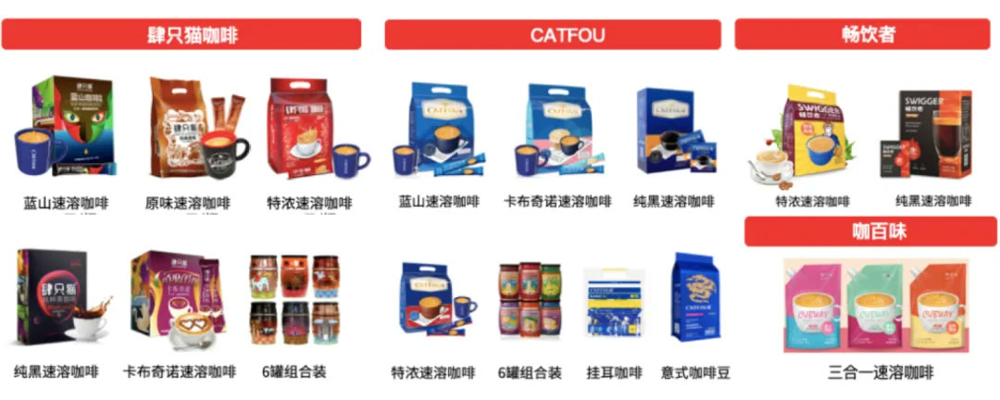
▲老四只猫 VS 新四只猫
扎下事业母体的根，建立品牌的根基我们首要要解决的课题就是“如何为企业建立品牌、从而掌握流量主权”？德鲁克提出社会职能原理，企业是社会的公器，要为社会解决问题；因此能为社会解决问题，能对社会有所回报，这才是我们流量的根本源泉。华与华创立的文化母体品牌理论，背后还有更广泛的事业母体哲学，那就是：谁生我养我？我要回报谁？做企业，当然首先是消费者的人，但是我们也还有其他回报对象。四只猫是云南的企业，就是云南的人，就得为云南咖啡解决社会问题。云南咖啡的问题首先是文化自卑的问题：其实中国 95 %以上的咖啡都产自云南，但许多品牌都主动或者被动假装自己用的是“洋咖啡豆”，只字不提咖啡基豆来自云南，而是强调“采用阿拉比卡豆”。实际上，阿拉比卡是世界三大咖啡品种之一，产量占全球60 %。云南是中国最大的阿拉比卡豆产地。云南咖啡甚至被“出口包装转内销”，云南咖啡协会会长李晓波曾说：“云南咖啡常被低价出口海外，被国外咖啡企业包装贴牌后再高价卖回中国。”⻓此以往的信息不对称导致了社会问题：云南咖啡过去 30 年只能为他人做嫁衣，被国际大采购商掌握定价权，报道显示，一杯 35 元的咖啡，到云南咖农手里只有 2 毛钱，整整 175 倍差距，火爆的咖啡赛道背后，咖农赚不到钱，不得不弃咖种菜。
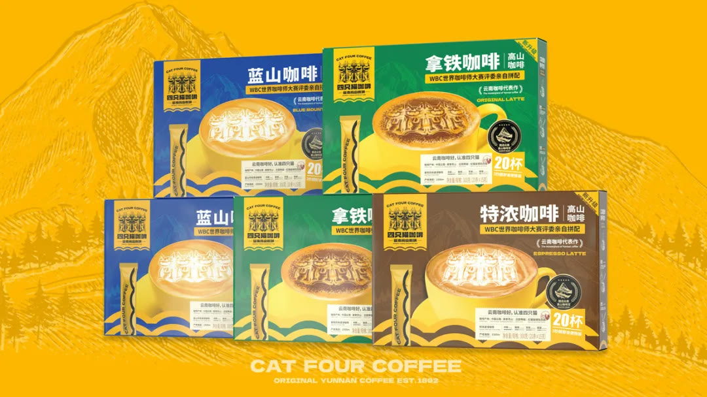
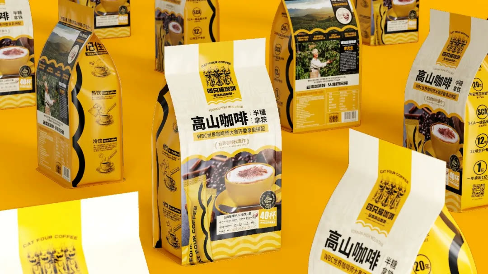
四只猫咖啡因为云南而得以发展，也要让云南咖啡发扬光大。云南咖啡的经济发展和云南咖农的劳动价值，就是四只猫的事业母体，也是我们品牌的根基。董事长陈莎曾说：“中国的咖啡基本都是云南供的，好的咖啡其实并不贵，我就想做点平价的东西，咖啡在外国就是平价的东西，老百姓的东西，没想到结果一做，别人反而觉得我们 low 。”四只猫咖啡，首先就是要解决云南咖啡与消费者间信息不对称的问题，我们提出一个事业理论“云南咖啡好”，为云南咖啡正名。云南咖啡种植区与牙买加、哥伦比亚、埃塞俄比亚等知名产区同处于全球咖啡黄金种植带，高海拔让这里昼夜温差大、日照充足、降雨量丰富，导致咖啡果的成熟期更长，从而贮存更多营养物质和丰富风味，滋养出浓香平衡，略带果香的云南咖啡。基于四只猫的企业禀赋，我们提出企业经营使命：让中国人民喝上货真价实的云南好咖啡，让云南咖农过上勤劳致富的美好生活。所谓经营使命，使命是目的，经营是手段，使命的践行需要由一组独特的经营活动来实现。四只猫通过一套环环相扣的经营活动，创造了独属四只猫的模式：1 ）一个超级符号多个品牌定位，根据抖音生态开创“账号经理制”，一个经理带领一个团队管理一个账号，每个账号有不同的定位，形成账号矩阵；2 ）通过向上游投资、自建工厂，拥有国内唯一 3 条全自动生产线，三合一速溶咖啡年产量达 3 万吨，日发货包裹量最高可达 20 万单；3 ）自建 AVG 智能仓储，在效率不变的前提下，仓库面积节省四分之三；
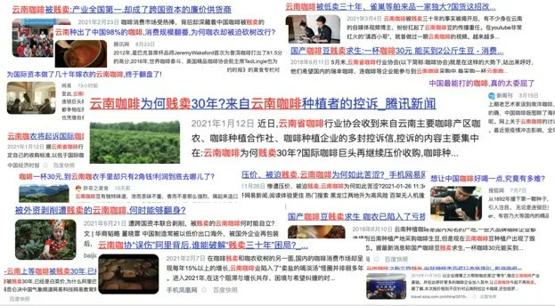
4 ）线上全平台电商直营模式，经营成本更低；5 ）有限的产品结构，款少量多，大规模采购带来成本优势；6 ）采取超级性价比的定价策略，既让利消费者，又有效阻挡新进入者的威胁；7 ）引进丰田精益生产，库存周转率实现 3 天一次；8 ）率先带咖农上包装，帮助咖农建立个人品牌，未来实现指定咖农购买，为咖农创收。我们建议四只猫暂时舍掉咖啡豆、挂耳咖啡等产品线，将企业资源集中到速溶咖啡品类，四只猫最终实现创造独特的价值、总成本领先和竞争对手难以模仿，并且具备践行经营使命的能力。回到文化母体，让品牌一夜之间获得母体能量，被亿万消费者所熟悉事业母体，是企业的根系，而这棵树想要长大，还需要土壤，这个土壤就是文化母体、就是云南文化。品牌自信首先是⺠族自信、文化自信！我们首先替云南喊出了一句话：云南咖啡好！我们立志要成为云南咖啡代表作，要让云南咖啡通过我们的事业走向世界，所以我们又加上了一句：认准四只猫！
更进一步的，我们在文化母体中找到了云南的非物质文化遗产符号：瓦猫。在过去云南家家户户都会在屋顶正上方安置瓦猫，祈求辟邪纳福，这一习俗至今仍然被当地许多地区保留和传承了下来。
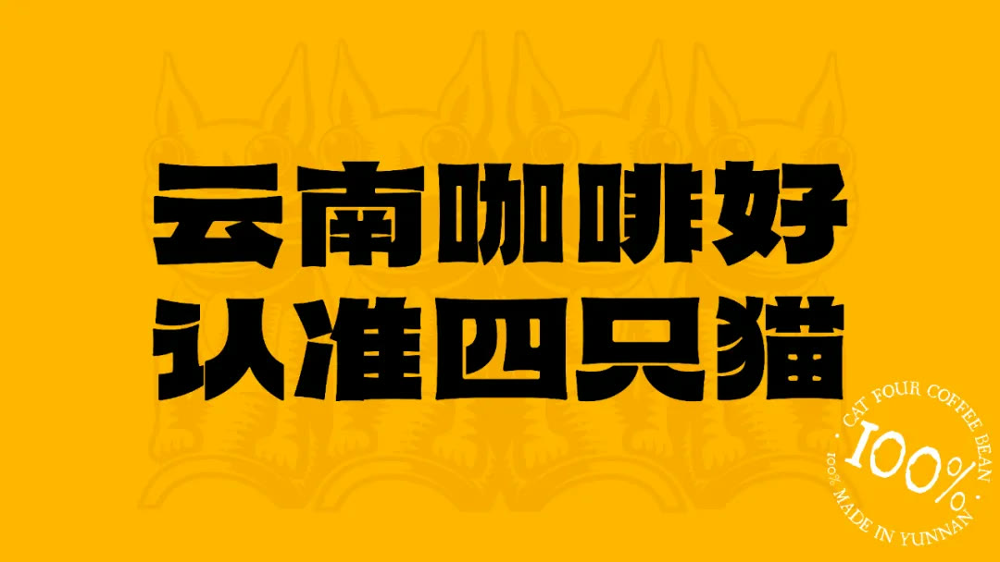
我们将经典的猫咪项圈上铃铛替换成咖啡豆，传达品类价值，完成私有化改造；并且将过去的三个品牌“肆只猫、 catfour coffee 、畅饮者”统一为“四只猫”，最终实现超级符号和品牌名能互为所指，彻底降低品牌的识别、记忆与传播成本。
建立“云南高山咖啡”新品类，品牌升级拉动年营收增长252%品牌文化的最高境界，是成为地方文化、最终成为文化遗产品牌。那四只猫咖啡如何推广云南咖啡、云南文化呢？首先，当我们站在世界的角度来看云南咖啡，它只是 53 个咖啡原产地之一，云南咖啡很好，缺少独特的价值。对于食品酒水来说，产地仍然是最重要的独占性资源，产地也
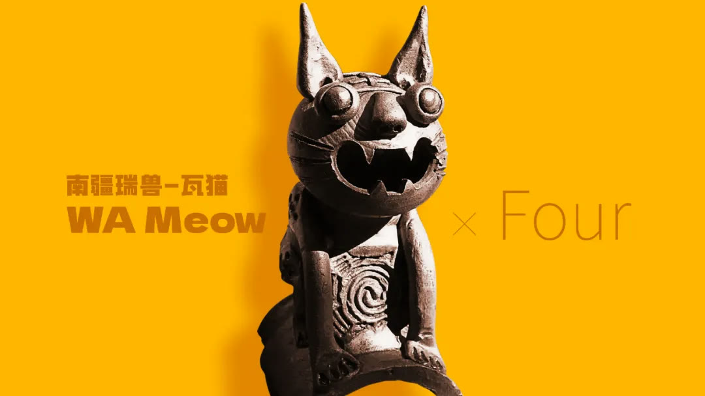
需要有独特价值的品类品牌，比如提到茅台就是茅台酒、提到波尔多就是法国葡萄酒、苏州就是阳澄湖大闸蟹。盘点全球上千个咖啡产区后，我们有一个重大发现：世界上最著名的咖啡产区都拥有一座海拔很高的高山，而世界上最好的咖啡，往往都产自这座海拔很高的高山。而云南省地理位置得天独厚，坐拥海拔 800 ~ 1800 米咖啡产区，借助“海拔高度是影响咖啡质量的重要指标之一”的全球行业共识，我们提出了云南咖啡新品类——云南高山咖啡！基于这个维度，云南咖啡从 53 个原产地跃升为世界四大高山咖啡核心产区之一。
▲世界四大高山咖啡核心产区地图
商品即信息，包装即媒体，我们有了推广云南咖啡、云南文化的商业动机，不应被掩饰，而是放大与时代的宏大叙事相结合。中国经济的底色永远是农村与农民，云南咖啡要走向世界，首先是云南的咖农走向世界。作为云南咖啡代表品牌，我们率先在品牌与产品传播上，将咖农带到人们的视野当中。我们在企业最大的广告位，包装上，为消费者讲述每一位咖农的故事，让顾客感受到手中咖啡的人文温度，未来实现指定购买，为咖农增收。
▲咖农上包装
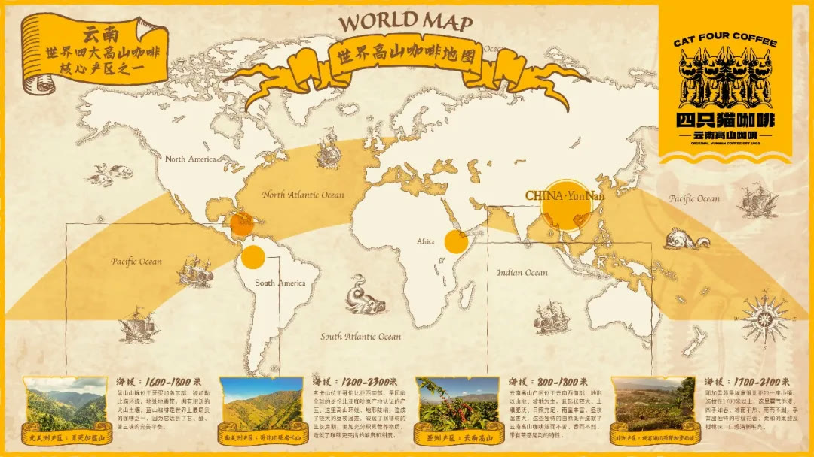
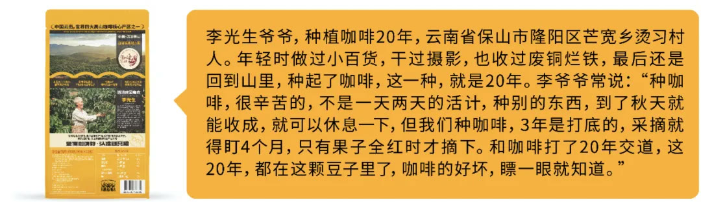
我们用全新的符号系统、话语体系重塑四只猫的所有产品，贡献年营收增长 2 . 3 亿；今年 3 月，四只猫完成全新品牌升级，拉动年营收同比增长 252 %。带咖农的包装，也让四只猫一下子跳出货架，从此大家知道这个行业里有一家叫四只猫的云南咖啡品牌，完成品牌定型。
2一个超级符号多个品牌定位带教企业 7 个月从 0 成长为抖音品类第一品牌华与华出手做抖音：用哲学级洞察，找到原理级解决方案，揭秘99%的企业都会走的弯路文化母体与事业母体，为企业立命，实现“品牌定型、流量越狱”，可眼见传统电商流量越来越少，如何帮助企业实现持续增长？华与华的价值观是：宁可不作为，绝不乱作为。我们强调，有了哲学级的洞察，才能拿得出原理级的解决方案。因此在共识了抓住内容撬动流量的机会、压倒性投入抖音后，我们并没有一上来就给四只猫出具体创意，而是做了底层逻辑的培训，因为传统电商和兴趣电商，底层原理完全不同。很多传统企业，把抖音当视频版的公众号用，企业新闻、活动宣传都往上发，结果钱没少花，流量却越做越差；也有很多电商企业，以为抖音就是个视频版的淘宝，上来就买流量、挑战赛、超品日，结果曝光数据挺漂亮，却没有成交转化。做好抖音首先要“戒贪”：抖音底层逻辑就是滚雪球机制，只滚同样标签的人群。这些乱动作、费动作，都是因为没有掌握抖音流量算法的底层原理：标签人群。从注册账号开始，抖音就会为用户的一切操作打标签，基于内容偏好和购买偏好，消费者被分为八大标签人群。
▲抖音八大标签人群图
同理，作为商家，你发的每一个视频、每一个商品链接，抖音都会记录下来哪类人群更感兴趣，然后不断的把你的内容推送给这类标签人群；如果你发的东西太杂，吸引各种各样的人群，系统就无法判断谁更爱看你、就会混乱，最后就只能不给你推流、账号死了。所以，抖音账号运营的核心就是要让我们的“抖店、账号、短视频、直播间”人群标签全部保持一致，标签越准、流量越多，反之标签混乱、流量自杀。一个超级符号多个品牌定位，四只猫开创“账号经理制”，成为抖音生态共同体在理解了以上抖音底层逻辑后，我们从哪里开始入手？不是从营销手段开始，而是从我们企业自己的组织架构开始。1927 年，宝洁公司研发并开始销售佳美牌香皂，尽管各个环节都非常努力，也投入了大量的广告费用，但销售业绩一直不理想。公司通过研究发现，由几个人负责同类产品的各个环节，不仅造成人力与广告费用的浪费，更重要的是各个环节容易脱节，产生了大量的浪费。由此，宝洁在全球率先开创“产品经理制”，让产品经理对产品销售进行全方位的计划、控制与管理，减少人力重叠、广告浪费和顾客遗漏，提升一个或多个品牌在整个公
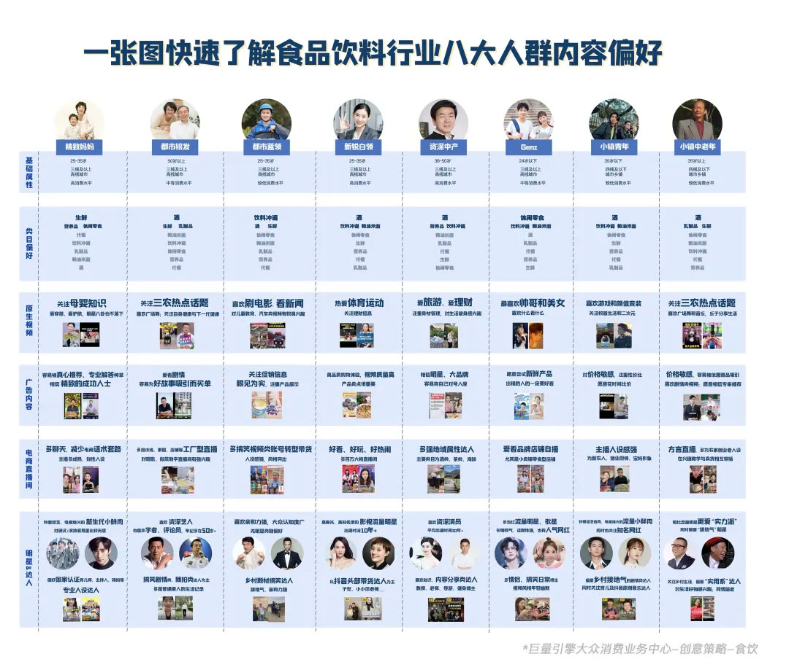
司利润中的比例，进而提升宝洁的整体竞争力。这就是从组织架构上解决营销效率问题。进入抖音时代，媒介传播的机制变了，过去是所有人看到同一媒介的同一传播内容。抖音将人群分为八大标签，这意味着一个标签就是一个传播渠道，并且小镇中老年人群不会看到精致妈妈人群的内容，这就反过来要求企业在要在不同的渠道传播不同的内容，进行不同的品牌账号定位。四只猫由此开创“账号经理制”，一个经理负责一个账号，一个团队负责完整的 4P 。每个账号都针对不同的标签人群、做不同的品牌定位，但它们都共享同一个超级符号的流量。所以进入抖音时代，不再是传统的锁定一个品类、搞一个品牌定位，而是一个超级符号统领多个品牌定位。在“四只猫”超级符号和云南原产地战略的统领下，华与华为四只猫做了三个品牌账号定位——定位工厂型账号，侧重账号和直播间展示工厂内容，吸引更信赖“原厂直发”吸引小镇青年；定位促销型账号，侧重营造限时大促的热卖氛围，吸引爱精打细算、爱贪便宜的小镇中老年；定位主题型账号，侧重根据营销日历更换主题，吸引对精致生活有着美好想象的都市蓝领。
这三大账号由三位优秀的账号经理负责，并且配置对应的短视频、直播和运营团队，这样每个品牌定位团队下的人，就能越来越熟练，对负责的人群认知越来越深入，效率越来越高。我们不仅是要和抖音建立利益共同体，而是要从组织和文化上建立起一个共生体。组织架构调整后，我们企业内部的生态就连通了抖音的生态，达到孔子所说的“随心所欲不逾矩“，我们在抖音的发展就成为顺水推舟的事，而不是企业天天都得去适应平台。今年仅这三个账号，就贡献了近 3 亿元的营收，比去年全渠道总和还增长了 76 %。一个超级符号多个品牌定位，不是特劳特的心智定位，而是迈克尔·波特的战略定位，通过一套独特的经营活动，使库存周转率达到3天一次华与华提出的品牌定位，并非特劳特式定位，并且华与华一直旗帜鲜明地反对特劳特式定位，即通过所谓“投入足够的传播资源”，去“占领消费者的心智”，消费者就会都买他的东西。首先，根本就不存在“足够的传播资源”，所谓“足够”，就是赌赢或输光为止，就是一场豪赌，赌赢了以为是自己战略正确，赌输了就大伤元气。其次，消费者心智的占领不是一劳永逸的，需要不断占领，否则你广告一停他就把你忘了。
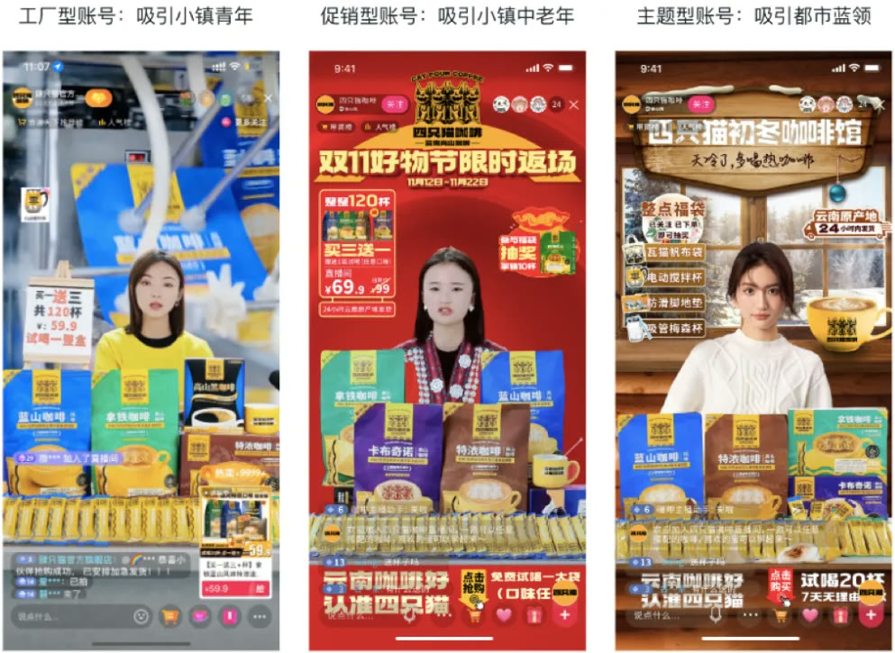
第三，如果持续投入所谓足够的传播资源，则几乎没有任何生意的回报可以覆盖这么大的传播成本。华与华从不去臆断消费者的心智问题，因为消费者心里想什么，只有消费者自己知道；华与华研究的是在符号和话语上做刺激反射的行为主义操作。比如“爱干净，住汉庭”的成功，不是因为“干净”定位，如果改成“汉庭，干净酒店专家”，就不起什么作用。成功的真因在于，它是一句来自生活中循环往复的文化母体的购买理由，我们从小就被大人教育要“爱干净”，这是几十年前训练的条件反射，一出来所有人都会听，是一门高超的修辞技术。华与华的定位是迈克尔·波特的“战略定位”，战略定位不是定了位去执行，而是执行本身，在执行的过程中形成一套独特的经营活动的组合。四只猫的“账号经理制”正是一套环环相扣的经营活动中的重要组成部分，才能实现库存周转率达到 3 天一次。针对不同账号定位，用华与华文案逻辑设计短视频脚本，同时创意流水线首次导入华与华客户，一年批量生产20000条短视频有了一个超级符号多个品牌定位，接下来就要针对不同的品牌定位去吸引和转化不同的人群，在华与华，我们把这些人群的集合称为“母体执行人”。什么是母体执行人呢？首先要理解文化母体的另一层含义，就是人类生活中循环往复的现象，母体中有人、有仪式、有道具。比如华与华为蜜雪冰城策划了“今年 520 ，去蜜雪冰城领情侣证”的活动，已经累计了上百万人领证，背后就是针对“母体执行人”的机关算尽。
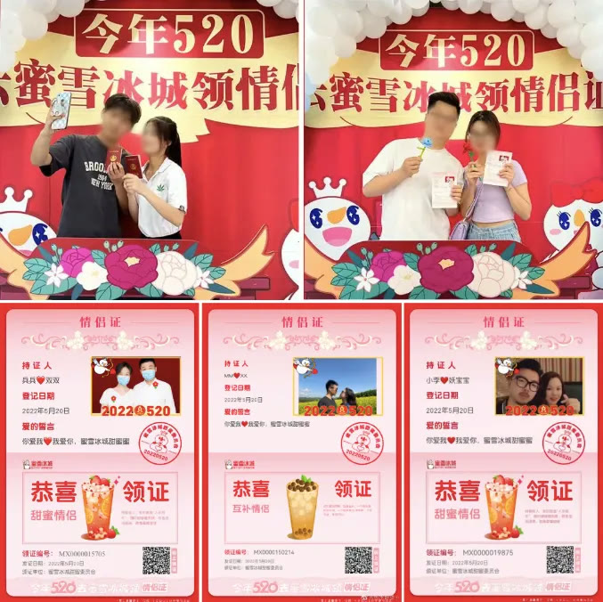
媒介变化了，但华与华方法中的传播原理依然没变、依然有效，反而因为短视频能更生动展示和还原母体行为，销售的威力被进一步放大。但在抖音，一条爆款带货视频平均只有 7 天的生命周期，想要维持稳定的销售增长，需要具备持续的、批量产出视频的能力。
因此，我们为四只猫提出了 FBSA 量产脚本公式，将所有的话术拆解，像组乐高一样，随意将内容进行组合，就会形成一条新的视频，然后基于销售情况，不断筛选出有效话术、重组拍摄、赚钱、再重组拍摄，如此循环。
我们还提出短视频标准 9 步工作法，以周围单位，从输出视频创意到投测分析整条链路打通。过去一年，四只猫能够按照这种流水线的作业方式，每周批量生产 400 条视频，全年批量生产 20000 条视频，爆款率也遥遥领先行业水平。
一场直播就是一场戏，按秒来设计，让每个企业掌握打造日销百万直播间的方法许多企业做品牌自播有一个误解：认为需要有一个天才主播，才能做大生意。李佳琦、董宇辉这样的主播可遇不可求，也不具有复制性，华与华做创意，永远追求可复制的创意，才有可复制的成功。
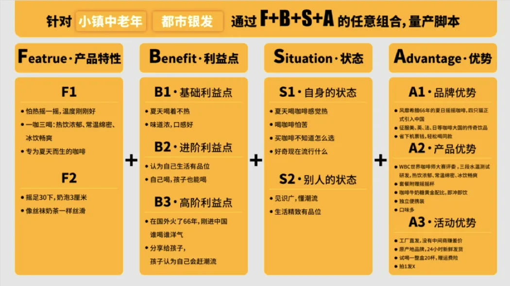
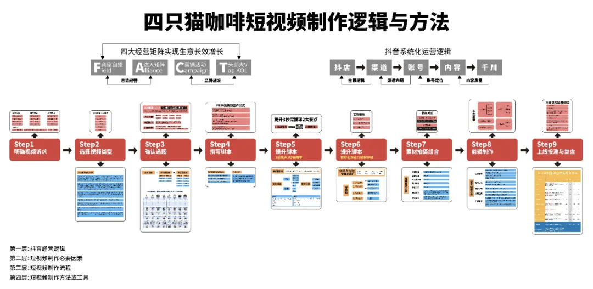
因此我们做直播间，仍然回到原点思考：直播间购物的母体是什么？往近了说是电视购物，往远了说，和几千年街边练摊儿的、叫卖的。其实也是一回事，只不过观看的媒介变了、从空气变成了电视、又从电视变成了手机。但直播间的本质没有变，都是一出戏，一出“走过路过不要错过”的戏。既然是戏，我们就需要设计台本，包括话术、主播的动作手势、气氛组的互动、屏幕上的组件、甚至连公屏的互动留言，实现按秒控制“演出效果”。因此我们根据四只猫直播间的平均停留时长，设计了“ 90 秒话术循环台本”，每 90 秒完成一次“三个购买”的循环：1 ）提供购买理由“货真价实的云南高山咖啡”；2 ）给出购买指南“ 1 号链接有蓝山、拿铁、特浓、卡布四种口味”；3 ）下达购买指令“现在下单就送杯子，原产地加急发货”。不管观众什么时候进来，我们都能发起卖货的进攻。
通过台本作业的方式，四只猫现在已经批量复制了 6 个直播间、 12 名主播，有 4 个直播间达成了单日百万 GMV 的纪录，这就是即使我们用最普通的主播，仍然能做到行业第
一的秘诀。生成全行业第一张抖音运营业务流程全景图，如今生产效率跟不上创意效率经过一年多的打磨，我们和四只猫一起总结出了全行业第一张抖音运营业务流程全景图，对照流程，初步实现了新人入职 3 天就能上手，打下了“复制成功”的基础。乃至于目前四只猫的货不够卖，生产效率已经跟不上创意效率。
为抖音渠道开发产品，实现“母体-品牌账号定位-购买理由”三位一体过去，很多企业只是把抖音作为品牌传播的推广阵地，其实，抖音本身也是销售渠道。为渠道开发产品，是营销中的重大课题。基于一个超级符号多个品牌定位，我们还能根据账号定位开发不同产品。那如何为抖音渠道开发产品呢？我们用华与华创意研发 8 步走。第一步：看本品、看货架。通过拉取电商平台数据，我们发现主推“饱腹感强、有助于燃脂”的黑咖啡是近几年速溶咖啡中销量最好的产品品类；第二步：定价值、找母体。黑咖啡本身有促进新陈代谢的功效，并且 0 糖 0 脂，符合健身人群“控糖”的诉求，这是我们要放大产品价值；同时我们洞察到，在健身瘦身等强调自律的人群之中，有着进行“ 7 天、 21 天、 90 天打卡”的习惯，“打卡”是一个巨大的母体行为；第三步：创意购买理由。基于母体行为，我们创意“ 21 天 0 糖打卡黑咖啡”，提出“ 1 天 2杯，打卡 21 天”的购买指南。第四步：产品命名。产品就是购买理由，我们直接将产品命名为“ 21 天 0 糖打卡黑咖啡”。第五步：用包装放大购买理由。我们发现，电商平台上销售最好的黑咖啡产品头图，往往都会在产品旁放上一张腹肌照，消费者通过“腹肌”符号，购买“拥有腹肌”的想象；
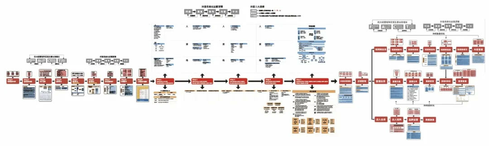
于是我们直接在包装正面上放大人体曲线符号，背面放大打卡表，就是放大购买理由。第六步：文案快速罗列证据。在包装上设计了“ 0 蔗糖、 0 脂肪” icon 等信息，支撑购买理由。第七步：给出购买指令。 21 天 0 蔗糖打卡，轻松建立好习惯。第八步：清理设计垃圾。
原本主要销售的是一盒 20 杯的规格，根据购买理由后，就能主推 42 杯一盒的规格，有了这个母体行为，第一个月就卖了快 1000 万，为品牌扎下第二个金角，不仅卖得更好、还卖得更多。更进一步，我们为四只猫规划了 50 亿产品价值版图，也是未来我们产品战略的行军路线图。
3回到母体、成为母体、壮大母体同时激活顾客市场、政策市场、人才市场、社会公民市场！在重塑四只猫品牌和帮助四只猫重构抖音流量之后，接下来要做的是继续深耕事业母体，建立四只猫品牌文化，帮助四只猫建立不可撼动的行业地位。在我们看来，品牌分为两种，有文化的品牌，和没文化的品牌。在一个行业里，只有少部分品牌能理解文化，进而拥有文化。要理解品牌文化，就要理解华与华“文化母体四部曲”——寻找文化母体，回到文化母体，成为文化母体，壮大文化母体。
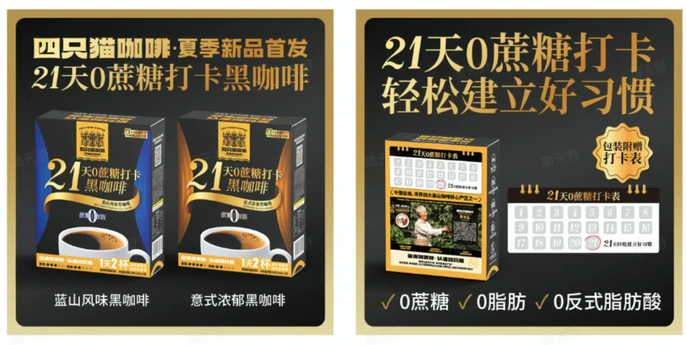
四只猫从云南文化母体中来；通过由“云南咖啡好，认准四只猫”统领的话语体系、符号系统、产品结构回到云南文化母体中去；通过销售更多的产品、传播更多的原产地故事，成为文化母体的一部分；我们还要继续通过经营活动，壮大云南文化母体。生意不止是企业的生意，更是一方百姓的生计。今年 12 月，我们和云南省农业厅、普洱市政府等单位一起，举办了第一届云南高山咖啡采摘节，庆祝咖啡丰收，为中国咖农造节。我们邀请了 100 位全国各地的咖啡师，携手 100 位云南本地的咖农，举行全球首次同时冲煮 100 杯咖啡的比赛；我们邀请了其他三大知名产区的咖农，与云南本地咖农进行直播互动，让云南咖农登上世界舞台。我真切的感受到了云南文化的能量、也重新认识了云南农民，这是我们在云南乡村振兴上，迈出的一小步。四只猫咖啡的原产地战略、我们对经营使命和社会责任的践行，更激活了企业的另外四个市场，让四只猫咖啡获得了更⻓远、更扎实的发展——我们成为了当地人才向往的公司，四只猫开始成为了字节、 B 站等大厂员工的跳槽目的地；我们成为了被行业与政府认可的公司，我们与专家携手共同研究、制定云南高山咖啡的产品科学与种植标准，推动产业发展的同时，将咖农与消费者链接起来，提升他们的收入；相信我们也会成为被广大社会公⺠信赖的公司，我们选择做信息对称的生意，让广大顾客获益，少花“冤枉钱”。
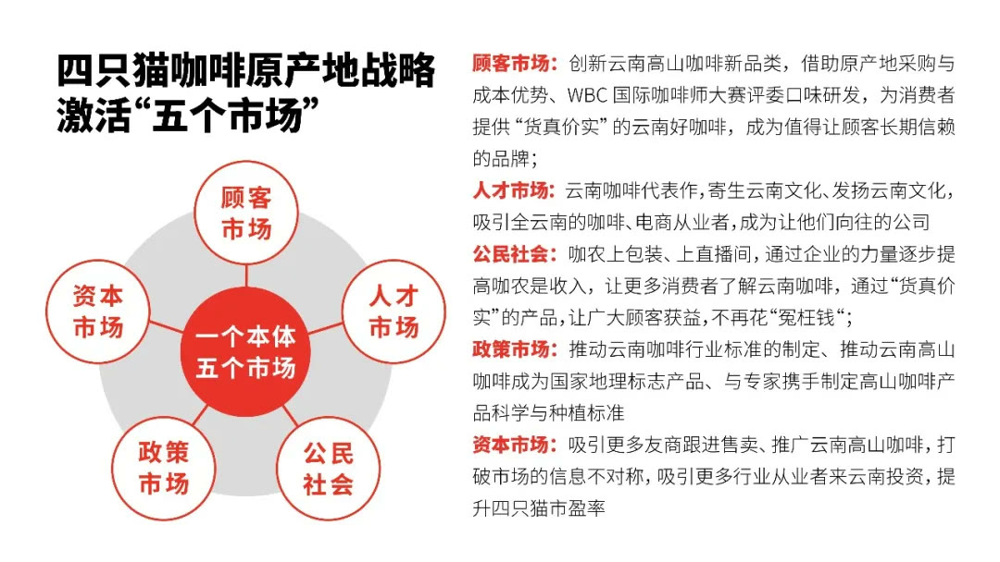
品牌文化的成本本质，就是人类文化，我们要用云南文化，建立云南品牌，和国际行业巨头比起来，我们目前规模还小，但我们的志向很大，未来四只猫咖啡将立足于全球，推广中国云南的咖啡文化，让云南咖啡走向世界，教会全世界的所有人都说一句：云南咖啡好，认准四只猫！全文总结进入抖音时代，传统的一个品牌一个品类一个定位已经失效，而是同一超级符号多个品牌定位。华与华从经营使命、事业母体、文化母体、品牌三角形到产品开发、公关活动、创意流水线，为四只猫咖啡提供“改变命运级创意”的解决方案。用一个超级符号统领多个品牌定位，从生意失速点到合作 18 个月以来每月连续增长，营业额突破 4 . 3 亿，全面成长为抖音品类第一品牌，成为国务院点名研究的中国电商标杆案例。改变企业命运，从文化自卑到文化自信，以下三大指标，缺一不可：1 ）扎根文化母体与事业母体，为企业立命，完成品牌定型，上场就赚钱！2 ）一个超级符号统领多个品牌定位，从 0 到 1 破局抖音， 7 个月成长为抖音咖啡品类第一！3 ）“云南咖啡好，认准四只猫”一句话同时激活顾客市场、政策市场、人才市场、社会公民市场！